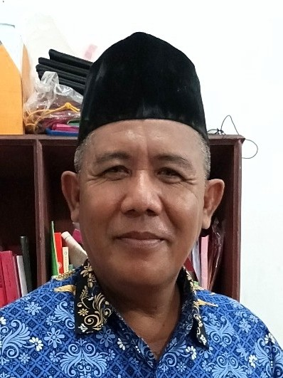
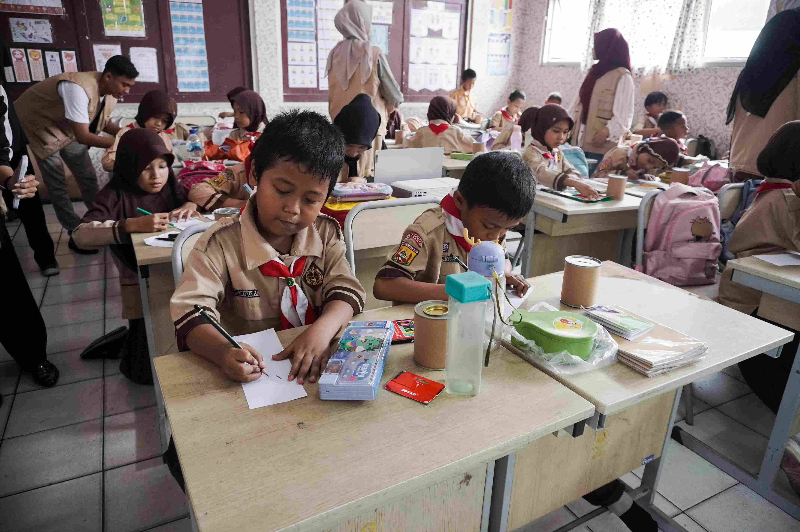
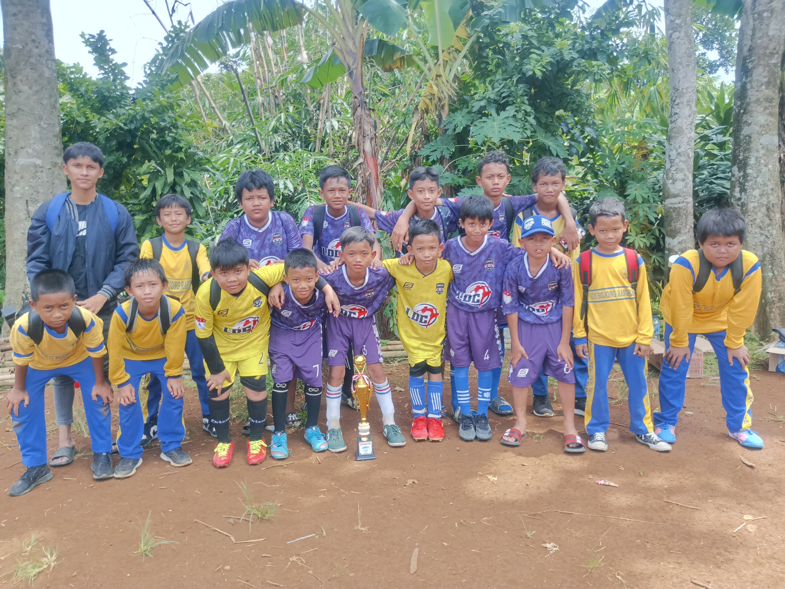

Selamat datang di SDN BOJONG RANGKAS 02 CIAMPEA
Profil Kami

Kepala Sekolah
Nama: Suhandi, M.Pd.
SDN 02 Bojong Rangkas dipimpin oleh Suhandi, M.Pd, seorang pendidik yang berdedikasi tinggi dengan pengalaman
dalam dunia pendidikan dasar.
Galeri Kegiatan

Murid Belajar Menggambar

Lomba Tari Menari

Lomba Sepak Bola